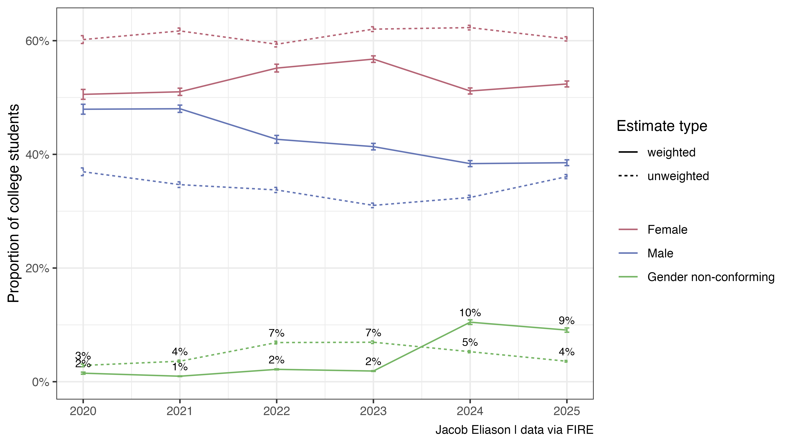

Eric Kaufmann’s recent article on UnHerd–covered by the New York Post, RealClearPolitics and elsewhere–claims that gender non-conforming identification among U.S. college students “has effectively halved” from 6.8% in 2022-2023 to 3.6% in 2025.
This conclusion, based on analysis of survey data collected for FIRE’s College Free Speech Rankings, suffers from several issues, including a significant analytical error I haven’t seen documented yet: Kaufmann failed to use the survey weights required to produce representative survey estimates. Using the same dataset, I calculated both unweighted and weighted estimates of gender non-conforming identification by year. The unweighted series reproduces Kaufmann’s numbers, but the weighted series (appropriate for inference) shows a different trend.

Why weights matter
The organization that runs this survey uses post-stratification weighting to ensure their sample reflects the national population of college students. This is standard practice to account for variable rates of survey non-response by respondent demographic (Groves 2006). The justification for survey weighting is straightforward: even if survey invitations are sent to a representative sample from a target population, raw survey responses are usually not representative because individuals from certain demographic groups are more likely to respond to survey invitations. Weights rebalance the actual sample toward externally validated benchmarks so estimates better represent the population of interest. If you ignore these, you are explicitly describing the respondent pool, not the target population.
What can we say?
Deriving causal claims about temporal effects from cross-sectional data is always challenging, but a good faith answer to the question of how the prevalence of gender non-conforming identification has changed over time is dead on arrival without survey weights.
Proudly human-written. Code for the analysis described in this post is available here.